What's new in ArcGIS Pro 3.4
See what's new and improved in ArcGIS Pro 3.4.
Video overview
This video was created by the ArcGIS Pro development teams and the product support teams to highlight new functionality in this release.
Highlights
The Highlights section includes featured new functionality.
Create a definition query from a feature layer selection
The new Generate Definition Query From Selection geoprocessing tool is included in the Layers and Table Views toolset of the Data Management toolbox. If you have an active selection of features on a map or scene, you can generate a definition query that only includes the selected features. You can also filter the selected features using field values from the selection.
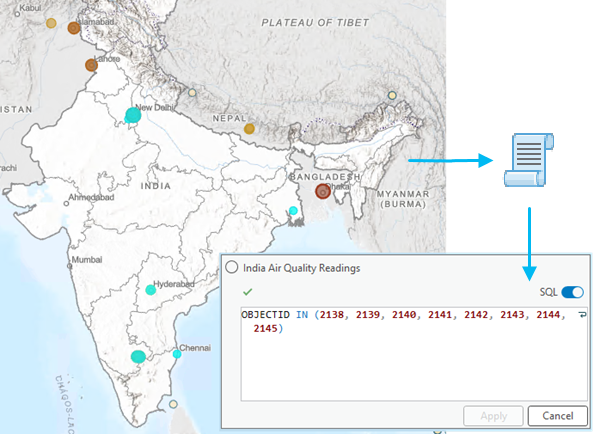 |
Control symbol class visibility for Unique Values symbology
Unique values symbology draws nominal data in feature layers with a different symbol for each class. You can now control the visibility of each symbol class independently using either the Symbology pane for a single layer or the Contents pane of the map for multiple map layers.
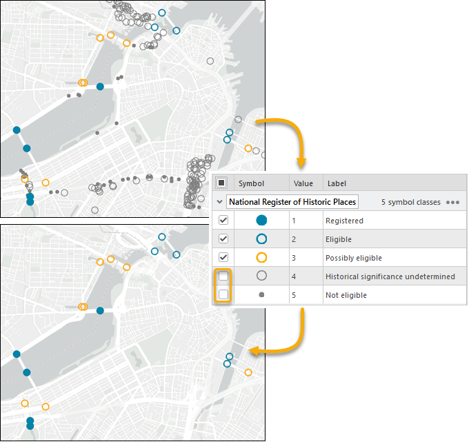 |
Two symbol classes are turned off in the Symbology pane and no longer draw on the map. |
Set the time period for offline license checkout
As an ArcGIS Online organization administrator, you can specify the number of days that ArcGIS Pro licenses can be taken offline. As an organization member with access to ArcGIS Pro, you can check out a license for any number of days up to the limit set by the administrator. This capability is available with the November 2024 ArcGIS Online update.
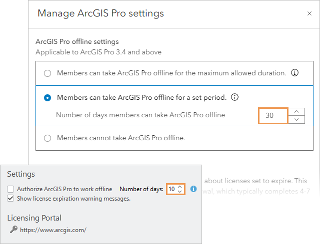 |
Top image: An ArcGIS Online administrator sets a 30-day limit for ArcGIS Pro offline licenses. Bottom image: An ArcGIS Pro user may only need to check out the license for 10 days. |
Share 3D Tiles to ArcGIS Enterprise
You can share 3D Tiles datasets as web layers to ArcGIS Enterprise 11.4 and later. 3D Tiles is an OGC standard that enables the visualization of large-scale 3D content. A web layer can be shared from a 3D Tiles layer within a scene. You can also publish a web layer that directly references a 3D Tiles dataset in a folder or cloud storage location registered as a data store with the server. On ArcGIS Enterprise, 3D Tiles layers are visualized as integrated meshes or 3D objects. These web layers can be incorporated into web scenes, providing dynamic 3D visualizations that support analysis and decision making.
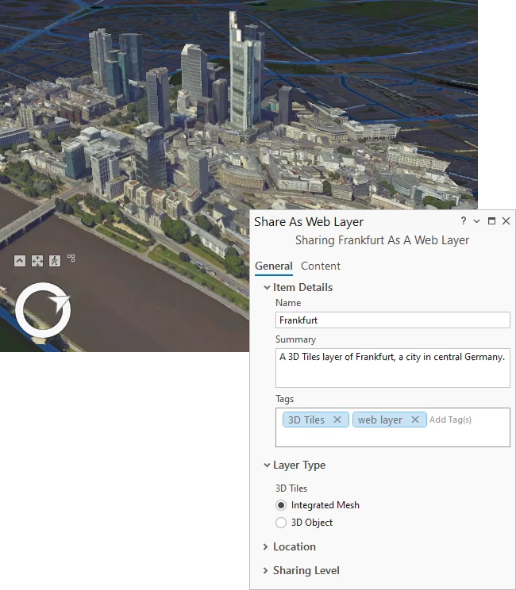 |
Create combo charts
Combo charts combine bar and line series in a single chart. They allow you to choose the appropriate series type for your data and compare series of different types. Combo charts also support dual y-axes, which is useful for exploring relationships between series of different scales.
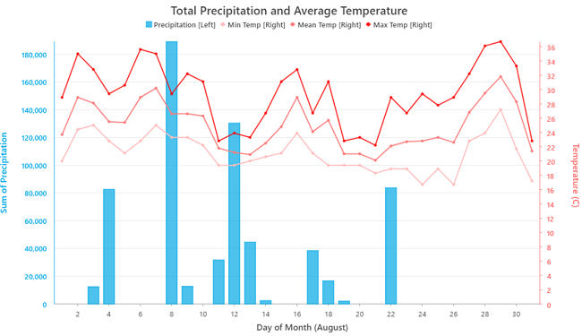 |
Work with hyperspectral imagery
Hyperspectral imagery comprises hundreds of contiguous bands across the electromagnetic spectrum. ArcGIS Pro now supports hyperspectral images stored in standard raster formats, such as TIFF and ENVI, as well as EMIT imagery stored in NetCDF format, and AVIRIS imagery stored in ENVI format.
A common way to add hyperspectral data to a map is from the Map tab on the ribbon. Click the Add Data drop-down arrow (the bottom half of the split button), and select Hyperspectral Data. The Add Hyperspectral Data dialog box appears and you can browse to a file.
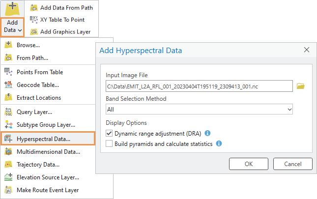 |
Support for foundational models in AI for imagery and text
You can fine-tune geospatial foundation models, such as Prithvi and ClimaX, using the Train Deep Learning Model tool in the Image Analyst toolbox.
- Prithvi, developed by NASA and IBM, is trained on Harmonized Landsat & Sentinel (HLS) data and supports 30-meter global land observations. It can be fine-tuned for tasks such as crop classification, burn scar segmentation, and flood segmentation on your own data, or used as a backbone for object detection and pixel classification tasks on remote sensing data.
- ClimaX specializes in weather and climate modeling, handling tasks such as temperature forecasting and downscaling climate projections.
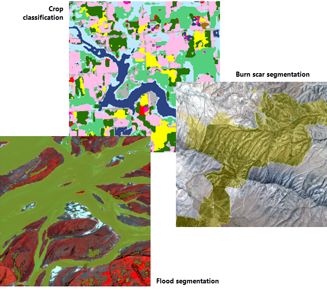 |
For text analysis, you can use large language models (LLMs) through in-context learning. This uses simple prompts and a few training examples. The text analysis tools can now use Mistral, an open-source LLM, to train and use models for text classification, text transformation, and entity recognition tasks. You can also integrate third-party LLMs such as GPT and Llama by creating custom deep learning packages using Python NLP functions.
Performance and productivity
Performance and productivity have been improved in ArcGIS Pro 3.4. The following subsections include examples, and more are referenced throughout this topic and elsewhere in the help.
Performance
- The default rendering engine is now DirectX 12. See what's new in Mapping and visualization.
- Stereo map panning performance was improved. See what's new in the Image Analyst extension.
- Performance was improved for several hydrology geoprocessing tools. See what's new in the Spatial Analyst toolbox.
- The Classify LAS By Height geoprocessing tool runs significantly faster. See what's new in the 3D Analyst toolbox.
- Conda was upgraded, resulting in faster package operations. See what's new in Python.
Productivity
- The Options dialog box and many properties dialog boxes are searchable. See what's new in Get started.
- You can copy subsets of properties from one layer to another. See what's new in Mapping and visualization.
- Floating views can be minimized. See what's new in Get started.
- When creating attribute rules, you can specify fields that trigger calculation rules and constraint rules. See what's new in Geodatabases and databases.
- You can export shortcuts to PDF from the Keyboard Shortcuts dialog box. See what's new in Get started.
- Attribute rule templates help you author common attribute rules. See what's new in Geodatabases and databases.
- You can customize the appearance of the topology graph for map and geodatabase topologies. See what's new in Editing.
Get started
- ArcGIS Online administrators can specify the number of days that members can take ArcGIS Pro offline. See Set the time period for offline license checkout in the Highlights section.
- You can search for properties and settings in the application options, map properties, layer properties, and other dialog boxes.
- Semantic search is available for Command Search and searches of item properties and application options. If a language pack is installed and activated, search phrases can be entered in English or the local language.
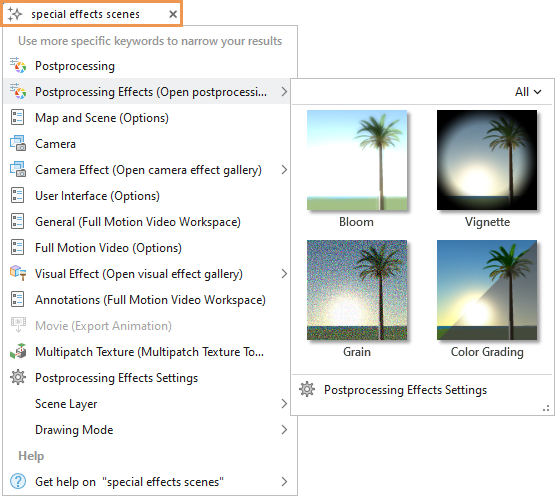
In the Command Search box, with semantic search enabled, a search phrase returns a rich set of search results. - You can minimize floating views. To restore a minimized view, hover over the ArcGIS Pro icon in the Windows taskbar and click the view.
- A simplified ribbon option displays smaller command icons without text. This creates more space for maps and other views.
- You can export keyboard shortcuts to PDF from the Keyboard Shortcuts dialog box.
- New registry keys give you more options to configure update notifications. For example, you can receive notifications only of patch updates to your current version.
- Add-ins stored in a well-known folder now appear as shared add-ins to prevent them from being accidentally deleted.
- Silent installation command line parameters for installing ArcGIS Pro Coordinate System Data and deauthorizing Single Use licenses are documented.
- Stacked panes display icons for clarity. Click the drop-down arrow to open a pop-up window with the full name of each pane.
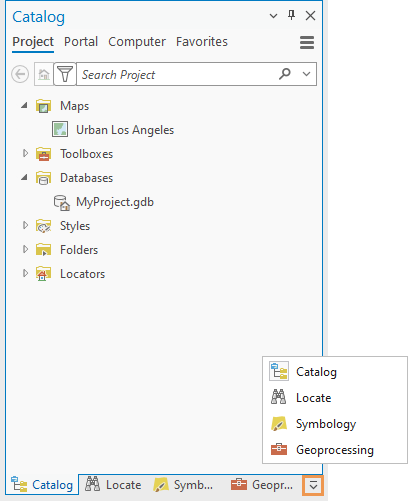
Analysis and geoprocessing
General
- A notification appears when a tool completes if the Geoprocessing or History panes are not visible. Use the Show notification when tool completes geoprocessing option to hide or show the notification.
- In a script tool’s ToolValidator class, you can apply filters dynamically for each data type in a composite parameter using the Parameter object's Filters property.
- You can set the descriptions that appear on a script tool when a user hovers over a parameter's information icon on the tool dialog box.
- Script and model tools have four new Attribute properties on the General tab of the Tool Properties dialog box:
- Show banner that tool modifies the input data
- Do not add tool outputs to map
- Show Enable Undo toggle
- Show banner that tool consumes ArcGIS credits
- Geoprocessing tool parameter descriptions include legacy notes for parameters that work differently than in previous releases or are no longer supported.
Charts
- Combo charts allow you to visualize bar and line series in a single chart with optional dual y-axes. See Create combo charts in the Highlights section.
- See Charts module in the Python section for Charts module enhancements.
Geoprocessing services and web tools
- You can schedule the running of web tools that you own or manage starting with ArcGIS Enterprise 11.4.
- When publishing a geoprocessing service or web tool, you can add an optional parameter that allows users to create output image services from raster outputs.
- You are no longer required to provide metadata for your web tools, although it is still recommended.
- Six new data types are supported when you share an analysis to ArcGIS Enterprise 11.4 or later: Extent, Envelope, Spatial Reference, Coordinate System, String Hidden, and SQL Expression.
Link analysis
- Several layout types were added to feature-based link charts, including tree, balloon, and radial layouts.
ModelBuilder
- The Calculate Value tool now supports Arcade expressions in addition to Python expressions.
- The new Custom Message tool adds custom error, warning, or informative messages that appear when a model is run.
Raster functions
Enhanced raster functions:
- Distance Accumulation and Distance Allocation—The Vertical Factor parameter has new Hiking Time and Bidirectional Hiking Time options. Cost raster values that are negative or zero are invalid but are now treated as small positive values. Previously, they were treated as NoData.
- Distance Accumulation, Distance Allocation, and Optimal Path As Raster—Distance analysis can properly handle the edge of the projection at a global extent when using either a cylindrical projection or a geographic output coordinate system and the geodesic method.
Spatial statistics
- See Spatial Statistics toolbox for new and enhanced geoprocessing tools.
3D Analyst extension
- The Delete Breakline tool was added to the interactive TIN Editor.
- A line of sight profile graph can be made from the feature output of the Line Of Sight geoprocessing tool.
- Profile graphs include the following items:
- Cursor tracking to mimic the cursor location in a graph at corresponding positions along the profiled lines.
- Chaining of features to treat multiple input lines as individual profiles. For example, you can combine multiple connecting roads, streams, or trails into single logical profiles in the graph.
- The option to use m-values from input polyline vertices for y-axis values as well as z-axis values.
Lidar and LAS datasets
- A new workflow topic explains how to extract building shells from aerial lidar.
- A notification appears when a LAS dataset with a missing or outdated display pyramid is added to a map or scene.
Geoprocessing tools
- See 3D Analyst toolbox for new and enhanced geoprocessing tools.
Business Analyst extension
- Use the color-coded layer workflow to map global standard geographies when connected to online data, and hexagons when connected to supported local datasets. See data summaries, visualizations, and a table in the Results pane.
- Use the suitability analysis workflow to set a target site. The workflow pane contains enhanced site scoring methods and weighting methods. See data summaries, visualizations, and a table in the Results pane.
- Use the benchmark comparisons workflow to compare features using site attributes and variables, set a benchmark location and method, and add standard geographies. See the comparison table in the Results pane.
- The data browser was updated with data category and subcategory cards that display the count of variables and indicate new and noteworthy variables in the dataset.
Territory Design
- Territory design includes drag-and-drop territory reassignment on the map and enhanced charting capabilities in the Modify Territories pane, a Filter By Adjacent Features command, and attribute constraint violation warnings.
Geoprocessing tools
- See Business Analyst toolbox for new and enhanced geoprocessing tools.
Geostatistical Analyst extension
- See Geostatistical Analyst toolbox for new and enhanced geoprocessing tools.
Image Analyst extension
Deep Learning
- Feature extraction is accessible from the Deep Learning Tools drop-down menu in the Classification group, which opens the Extract Features Using AI Models tool.
Motion imagery
- Videos can be enhanced with Dynamic Range Adjustment (DRA) as they play.
- The Video Search tool works with point feature classes.
- GoPro GPS metadata streams, including GMF and MET, are supported.
- Three commands were added to the Tracked Objects group: Move Object, Remove Objects, and Delete Objects.
- Videos can be georeferenced using spatial reference metadata embedded in the video.
Stereo mapping
- Stereo map panning performance was improved.
Geoprocessing tools
- See Image Analyst toolbox for new and enhanced geoprocessing tools.
Network Analyst extension
- The Field Script Evaluator and Element Script evaluator dialog boxes have been enhanced with aids for writing evaluator expressions.
Spatial Analyst extension
- See Spatial Analyst toolbox for new and enhanced geoprocessing tools.
- See Raster functions for new and enhanced raster functions.
- See Spatial Analyst module in the Python section for Spatial Analyst module enhancements.
Geoprocessing tools
3D Analyst toolbox
New tools
- Extract Rails From Point Cloud—Extracts rail track lines and center lines from classified railroad tracks in a LAS dataset, point cloud scene layer package, or I3S point cloud layer.
Enhanced tools
- Classify LAS By Height—Offers improved performance and the functionality to classify areas at subfile granularity.
- Line Of Sight—New output attributes facilitate the creation of a line-of-sight profile graph.
- Classify LAS Ground—The new Recover Ridges ground detection option improves results for ridge areas that were not successfully classified using standard ground detection methods.
- Change LAS Class Codes—All class codes can be modified at once. For example, you can undo all existing classifications and classify a point cloud from the beginning.
- Interpolate Shape—Improved results are obtained with lidar-based surfaces across data voids such as rivers, lakes, and reservoirs.
- Skyline—The new Vertical Offset parameter enables the specification of vertical offsets to observer positions.
- Train Point Cloud Classification Model—The new Loss Function parameter allows for the use of focal loss. This improves results in the presence of unbalanced classes.
AllSource toolbox
New tools
- Military Raster To Mosaic Dataset—Simplifies the process of importing CADRG, CIB, DTED, and HRE rasters in a parent folder to individual mosaic datasets. This is useful for creating reference map data on connected or external drives.
Analysis toolbox
Enhanced tools
- Apportion Polygon—The Fields to Apportion parameter includes three statistical methods to get the sum, mean, or median value of a field.
- Pairwise Dissolve—The Statistics Fields parameter supports the mode statistic type to get the most common value in a field.
- Summary Statistics:
- The Statistics Fields parameter supports the mode statistic to get the most common value.
- DBMS statistic types are supported for faster calculations on input data from remote databases.
Aviation toolbox
Enhanced tools
- Calculate ATS Route Attributes:
- Calculates more route attributes using FAA specific rules. The FAA True Track bearing attribute and FAA Magnetic Track bearing attribute can be calculated on either a route segment or a route collection. The FAA Altitude Change Status attribute can be calculated on a route segment.
- The following parameters are only required when calculating any of the FAA attributes: Input DesignatedPoint Feature Layer, Input NavaidComponent Feature Layer, Input Designated Point Navaid Association Table, Input Navaid Association Table, and Input EnrouteInformation Table.
- Report Aviation Chart Changes—Supports evaluation criteria from the .json config files in the Prepare Aviation Data tool with the optional Prepare Aviation Data configuration file (.json) parameter.
Bathymetry toolbox
Enhanced tools
- Analyze BIS—Additional options for the Repair Operation parameter are included. The Regenerate BISBDI option rebuilds the BISBDI, and the Update Overviews option calculates and updates overviews and statistics.
- Add Data To BIS and Add Point Data To BIS—Precise Domain was added as an option for the Footprint Type parameter.
Business Analyst toolbox
New tools
- Set Target Site—Specifies a location as the benchmark for comparison in a suitability analysis.
Cartography toolbox
New tools
- Calculate Color Theorem Field—Populates a field that can be used to symbolize polygons so that no two adjacent polygons are the same color using a small number of colors.
Conversion toolbox
Excel toolset
Enhanced tools:
- Excel To Table—The Sheet or Named Range parameter converts named ranges from an Excel workbook file (.xlsx) to a table.
Point Cloud toolset
New tools:
- Mesh To LAS—Converts an integrated mesh into a LAS format point cloud.
Enhanced tools:
- LAS Dataset To Raster—Improved results are obtained with lidar-based surfaces across data voids such as rivers, lakes, and reservoirs.
Data Management toolbox
Attribute Rules toolset
New tools:
- Generate ID Attribute Rule—Creates an attribute rule that generates a unique value for a field from a query.
- Generate Spatial Join Attribute Rule—Generates a .csv file with an attribute rule for an input based on field values queried from one or more feature classes.
- Generate Symbol Rotation Attribute Rule—Generates an attribute rule specific to symbol rotation logic.
Contingent Values toolset
New tools:
- Generate Contingent Values—Generates contingent values from an existing dataset using either the data values in the table or the domain values assigned to the fields.
Data Loading toolset
Enhanced tools:
- Create Data Loading Workspace:
- You can block field matching on specified target fields using the mapping table.
- The Info worksheet in the data mapping workbook has a quick links section for improved navigation.
- Conditional formatting in the data mapping workbook signifies when the source and target field types might conflict.
- When a non-nullable target GUID field lacks a match, the system automatically inserts the create_guid() function to generate a unique identifier.
- Load Data To Preview—The preview database includes subtypes and domains.
- Update Data Loading Workspace Schema—Field matching during the update process was added for identical field names between the source and target datasets.
Features toolset
Enhanced tools:
- Calculate Geometry Attributes—Supports the Enable Undo toggle button.
- Unsplit Line—The Statistics Fields parameter supports the mode statistic type to get the most common value in a field.
Fields toolset
New tools:
- Alter Fields (multiple)—Alters the field properties of multiple fields in a feature class or table.
Enhanced tools:
- Calculate Fields (multiple)—The Fields parameter supports new or existing field names. When a new field name is specified, you can set the Field Type value to the desired type.
General toolset
New tools:
- Delete Multiple—Permanently deletes multiple data items of the same or different data types.
Enhanced tools:
- Append—The Enforce Domains parameter specifies whether domain rules in the target dataset are honored. Records with field values that are outside allowed domain values are not appended when using this parameter.
- Merge—The Field Matching Type parameter specifies how fields from the input datasets are transferred to the output dataset.
Generalization toolset
Enhanced tools:
- Dissolve—The Statistics Fields parameter supports the mode statistic type to get the most common value in a field.
Layers and Table Views toolset
New tools:
- Generate Definition Query From Selection—Creates a definition query in SQL format from the selected features or rows of the layer or table. See Create a definition query from a feature layer selection in the Highlights section.
Package toolset
New tools:
- Generate Level Of Detail—Generates additional levels of detail for third-party integrated mesh scene layer packages.
Enhanced tools:
- Consolidate Map and Package Map—The Consolidate to a single file geodatabase parameter consolidates data from different sources into a single file geodatabase.
- Create Point Scene Layer Content—The Support Symbol Referencing parameter reduces file size and processing time when using an Esri symbol.
Projections and Transformations toolset
Enhanced tools:
- Project—The Geographic Transformation parameter includes a Select transformation button
to specify the geographic transformation path and the source and target coordinate system.
Raster toolset
Enhanced tools:
- Export Mosaic Dataset Items—Includes three additional parameters for selecting bands: Band Method, Band Name Selection, and Band ID Selection.
- Alter Mosaic Dataset Schema—Supports AVIRIS and Satellogic imagery.
- Add Rasters To Mosaic Dataset—The Auxiliary Inputs parameter has two additional options: PanelReflectanceFactor and RadiometricQuantityType.
- Interpolate From Point Cloud—The new Classify Ground Options parameter classifies ground points from input LAS point cloud data.
Sampling toolset
Enhanced tools:
- Generate Points Along Lines:
- You can set the Point Placement parameter to By Distance Field to generate points based on field values specified in the Distance Field parameter.
- You can use the Distance Method parameter to create points based on planar or geodesic measurements when the Point Placement parameter is specified by distance.
Workspace toolset
New tools:
- Enable Editing Templates—Enables a geodatabase to store editing templates.
Geocoding toolbox
Enhanced tools
- Assign Streets To Points:
- The Country or Region and Language Code parameters were added.
- The Point Field Mapping and Street Field Mapping parameters include City and State address component fields for enhanced street assignment.
- Create Locator:
- Locators for India can be created in English. The Country or Region parameter supports India (IND).
- Locators for Norway can be created in Norwegian. The Country or Region parameter supports Norway (NOR), and the Language Code parameter supports Norwegian (NOR).
- The Version Compatibility parameter was added. If the Current version option is specified, the locator is not supported in ArcGIS Pro earlier than version 3.4 or ArcGIS Enterprise earlier than version 11.4. A backward compatible version of the locator can be created by specifying the 3.0 - 3.3 option.
- The Field Mapping parameter has a Smart Field Mapping button that automatically maps the fields from the Primary Table(s) parameter value to the locator role fields. The capability is available for some roles and regions. To use this functionality, you must enable the Create Locator AI model when you install ArcGIS Pro.
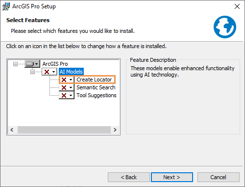
Geostatistical Analyst toolbox
New tools
Directional Trend—Creates a scatter plot chart on a feature layer displaying the trend of data values in a particular direction.
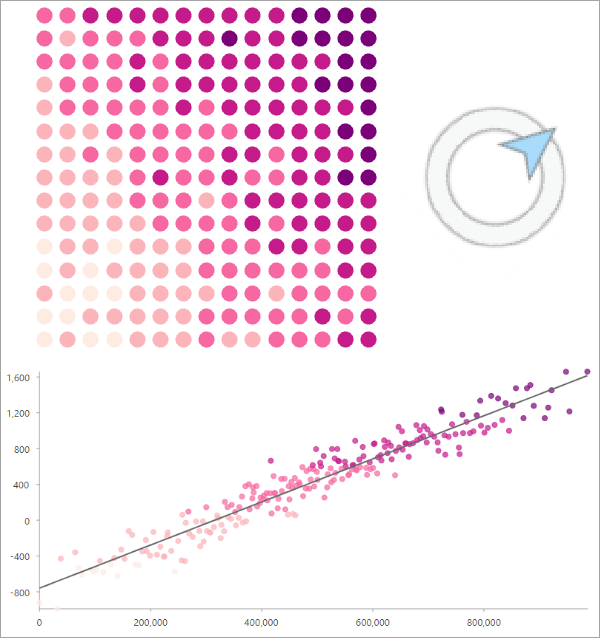
The original features and the trend of values at a given direction are displayed.
Image Analyst toolbox
New tools
- Apply Coregistration—Resamples the secondary single look complex (SLC) data to the reference SLC grid using a digital elevation model (DEM) and orbit state vector metadata.
- Compute Coherence—Computes the similarity between the reference and secondary input complex radar data.
- Detect Control Points—Detects ground control points in a mosaic dataset.
Enhanced tools
- Video Multiplexer:
- The Input Coordinate System parameter was added to support the Metadata File parameter.
- The Input Video File parameter supports .gpx and .json file types.
- Video Metadata To Feature Class—The Output Metadata File parameter supports .json output.
- Detect Objects Using Deep Learning:
- The Objects of Interest parameter specifies the object names that are detected by the tool.
- Oriented imagery is supported.
- Classify Objects Using Deep Learning—Results are appended to the existing feature class if one exists.
- Classify Pixels Using Deep Learning—Results are appended to the existing feature class if one exists.
- Train Deep Learning Model:
- Supports the ClimaX model type.
- The Backbone Model parameter supports the following models: 1.40625 degrees, 5.625 degrees, and SR3 U-ViT.
Indoors toolbox
New tools
- Generate Floor Plan From Point Cloud—Creates polyline floor plan features from LAS point cloud data collected from building scans.
- Generate Indoor Network Features—Generates indoor pathways and floor transitions on selected levels in one or more facilities.
- Import Features To Indoor Dataset—Accepts polyline features as an input and uses them to create floor plan features such as facilities, levels, units, and details in an Indoors workspace.
Enhanced tools
- Import IFC To Indoor Dataset:
- You can use the Set Ground Floor Elevation To Zero check box to specify how the ground floor elevation is determined.
- The tool creates units for stairs even if no room is modeled for the stairs in the source IFC file, and creates levels features that extend across stairways.
- Import BIM To Indoor Dataset:
- You can use the Set Ground Floor Elevation To Zero check box to specify how the ground floor elevation is determined.
- The tool creates units for stairs even if no room is modeled for the stairs in the source Revit file, and creates levels features that extend across stairways.
- Import CAD To Indoor Dataset:
- The tool creates a .json configuration file that includes all configured parameters for CAD mapping, annotation, and advanced settings.
- The tool can map handle information in CAD data to indoor features.
- Upgrade Indoors Database—The tool creates domains and fields to support organization areas in Indoor Space Planner.
Location Referencing toolbox
New tools
- Generate LRS Data Product—Transforms LRS data to create a length product for selected routes in an LRS Network.
Enhanced tools
- Overlay Events:
- Point event layers are supported as inputs. The output includes point event layers.
- When the centerline layer is part of an Address Data Management solution and is used as an input to the tool, address block range information stored on the centerline layer is updated in the output. If a centerline is split in the output, the address block range information is updated based on the proportional length along the centerline where the split occurred.
Maritime toolbox
Enhanced tools
- Copy S-57 Features—The Input Features and Target Workspace parameters can reference the same database and version.
Multidimension toolbox
Enhanced tools
- Describe NetCDF File:
- In the Variables table message, the Data Type field was added. The possible values for this field are int, short, and float.
- For the optional Output Description File parameter, the output can be saved as a .txt file or .cdl file, in addition to an .md file. If no file extension is provided, the output is saved as a .txt file.
Network Diagram toolbox
Enhanced tools
- Add Reduce Junction Rule—When reducing junctions with three or more connections, the new Use Digitized Direction parameter specifies whether digitized line direction or subnetwork controller location is used to identify the target upstream or downstream junction.
Parcel toolbox
New tools
- Find Adjacent Parcel Points—Finds parcel points that are on top of each other (coincident) or closer to each other than a specified tolerance.
- Find Gaps And Overlaps—Finds gaps and overlaps within parcel layers or between all input parcels.
Enhanced tools
- Copy Parcels—Individual parcel features, such as parcel points and parcel lines, can be copied by the tool.
Public Transit toolbox
Enhanced tools
- GTFS To Public Transit Data Model—Creates the LVEShapes feature class that stores cartographic shapes for public transit lines. This feature class is a new addition to the public transit data model.
- Calculate Transit Service Frequency—Can optionally use the LVEShapes feature class from the public transit data model to visualize the output as cartographic lines instead of straight lines.
- GTFS Stops To Features—Outputs a route_info field that includes information about the GTFS route IDs and transit modes that use each stop.
Raster Analysis toolbox
Enhanced tools
- Distance Accumulation, Distance Allocation, Optimal Path As Line, and Optimal Path As Raster—Distance analysis with these tools properly handles the edge of the projection at a global extent when using either a cylindrical projection or a geographic output coordinate system and the geodesic method.
- Distance Accumulation, Distance Allocation, and Optimal Region Connections—Cost raster values that are negative or zero are invalid but are treated as small positive values. Previously, they were treated as NoData.
- Summarize Raster Within—The following new options are available for the Statistic Type parameter: Majority count, Majority percentage, Minority count, Minority percentage.
- Zonal Statistics As Table—The following new options are available for the Statistic Type parameter: Majority count; Majority percentage; Majority value, count, and percentage; Minority count; Minority percentage; and Minority value, count, and percentage.
Ready To Use toolbox
Enhanced tools
- Trace Downstream—For the Output Trace Line parameter value, an additional field describes the resolution of the preprocessed data used internally to generate the output line feature class. The output fields are now PourPtID, Data Resolution, and Length Kilometers.
- Watershed—For the Output Watershed parameter value, an additional field describes the resolution of the preprocessed data used internally to generate the output polygon feature class. The output fields are now PourPtID, Data Resolution, and Area Square Kilometers.
Reality Mapping toolbox
New tools
- Detect Control Points—Detects ground control points in a mosaic dataset.
Server toolbox
Enhanced tools
- Create Map Server Cache—The Ready To Serve Format parameter generates cache content using the open tile package specification.
- Generate Map Server Cache Tiling Scheme—The Ready To Serve Format parameter generates cache content schema using the open tile package specification.
Spatial Analyst toolbox
New tools
- Feature Preserving Smoothing—Smooths a surface raster by removing noise while preserving features.
- Multiscale Surface Difference—Calculates the maximum difference from the mean elevation across a range of spatial scales.
- Multiscale Surface Percentile—Calculates the most extreme percentile across a range of spatial scales.
- Zonal Characterization—Summarizes the values of multiple rasters within the zones of another dataset and reports the results as a table.
Enhanced tools
- Basin, Flow Length, Snap Pour Point, and Stream Order—Performance improvements were made to these hydrology tools.
- Distance Accumulation, Distance Allocation, Optimal Path As Line, and Optimal Path As Raster—Distance analysis with these tools properly handles the edge of the projection at a global extent when using either a cylindrical projection or a geographic output coordinate system and the geodesic method.
- Distance Accumulation, Distance Allocation, and Optimal Region Connections—Cost raster values that are negative or zero are invalid but are treated as small positive values. Previously, they were treated as NoData.
- Interpolate Shape—Improved results are obtained with lidar-based surfaces across data voids such as rivers, lakes, and reservoirs.
- Space Time Kernel Density—Supports NetCDF for output. When the output format is set to the .nc file format, use the Output Voxel Layer parameter to create an output voxel layer.
Three new help topics provide more information about analyzing solar radiation with geoprocessing tools: Analyze solar radiation, How Feature Solar Radiation works, and How Raster Solar Radiation works.
Spatial Statistics toolbox
- The new Assessing Sensitivity toolset was added to the Spatial Statistics toolbox. It contains tools for assessing how analysis results change in the presence of uncertainty, such as uncertainty in attribute values.
- The new Spatial Component Utilities (Moran Eigenvectors) toolset was added to the Spatial Statistics toolbox. It contains tools for creating and using spatial components (called Moran eigenvectors). The tools are typically run before other analysis tools in the toolbox.
New tools
Assess Sensitivity to Attribute Uncertainty—Simulates multiple datasets from a spatial statistics analysis result and repeats the analysis with the simulated datasets. The tool then compares the analysis results of the simulated datasets to the original analysis results to measure the stability of the original results.
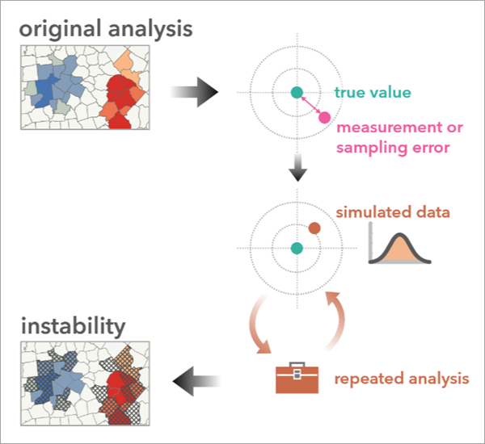
- Bivariate Spatial Association (Lee's L)—Calculates the spatial association between two continuous variables using Lee's L statistic. The statistic characterizes both the degree of correlation and the degree of co-patterning (similarity of spatial clustering) between the variables.
- Compare Neighborhood Conceptualizations—Selects the spatial weights matrix (SWM) from a set of candidate SWMs that best represents the spatial patterns, such as trends or clusters, of one or more numeric fields.
- Create Spatial Component Explanatory Variables—Creates a set of spatial component fields that best describe the spatial patterns of one or more numeric fields and serve as useful explanatory variables in a prediction or regression model.
Decompose Spatial Structure (Moran Eigenvectors)—Decomposes a feature class and neighborhood into a set of spatial components. The components represent potential spatial patterns among the features, such as clusters or trends.
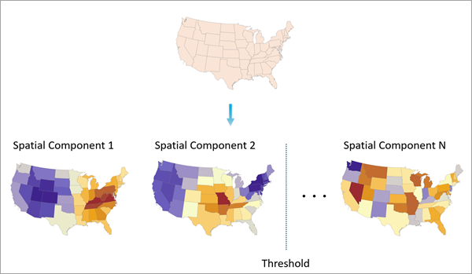
The original polygons are broken into separate spatial components and selected based on a threshold value.- Directional Trend—Creates a scatter plot chart on a feature layer displaying the trend of data values in a particular direction.
- Filter Spatial Autocorrelation From Field—Creates a spatially filtered version of an input field. The filtered variable has no statistically significant spatial clustering, but maintains the core statistical properties of the field.
Topographic Production toolbox
New tools
- Generate Isogonic Lines—Generates isomagnetic lines using the Calculate Magnetic Components tool for declination based on the World Magnetic Model.
Enhanced tools
- Calculate Metrics—The Only populate NULL values parameter limits the data overwritten to null values.
- Generate Adjoining Sheets Features—Setting the Scale parameter value to None reveals the Buffer parameter, which can be used to customize the selection of adjoining sheets.
Data management and workflows
BIM
- Revit and IFC Infrastructure categories such as roads, rebar, and mechanical controls were added.
- 2.5D floor plan creation from IFC content supports ArcGIS Indoors workflows.
- Revit 2025 format RVT files are supported.
CAD
- CAD data in maps and scenes are valid feature data sources when sharing web maps and web feature layers.
Data Reviewer
- You can use the Run Data Checks tool to run a quick review on your data. This tool is available for the following checks:
- The Flag Missing Features tool supports flagging point, line, and polygon missing features.
- The Browse Features tool supports sketching point, line, and polygon error geometries.
- Visual review is enabled at the geodatabase level and supports creating custom descriptions.
- The Domain check identifies only fields with invalid attribute values.
- The Invalid Event Measures, Find Event Gaps, Find Event Overlaps, and Find Orphan Events checks are supported in file and mobile geodatabase workflows.
- The Table to Table Attribute check supports filtering features and rows using the Features to Compare check parameter.
Geocoding
- The Compatibility Release property was added to the Locator Properties dialog box on the About the locator page. The property specifies the earliest release of ArcGIS Pro the locator is compatible with. The value listed is determined by the Version Compatibility parameter option specified when building the locator using the Create Locator tool.
Geoprocessing tools and Python
- See Geocoding toolbox for new and enhanced geoprocessing tools.
- See Geocoding module in the Python section for geocoding module enhancements.
Geodatabases and databases
- New functionality in ArcGIS Pro and ArcGIS Enterprise may not be compatible with prior releases. You can view the Minimum Client Version needed to access a dataset from its properties page, on the Source tab in the Data Source section.
- To facilitate the creation of contingent values, the Generate command on the Contingent Values ribbon tab populates the view with all possible combinations of contingent values for an input field group.
Attribute rules
- When you create attribute rules, you can specify fields that trigger an immediate calculation and constraint rule when edited. The rule does not run unless the field is edited.
- Three common attribute rules—Generate ID, Generate Spatial Join, and Generate Symbol Rotation—can be authored with attribute rule templates. Templates provide a dialog box with parameters to set, and they generate the appropriate Arcade expression for the attribute rule.
Cloud data warehouses
- You can view and publish features that are stored in the geometry data type in Snowflake.
Versioning
- The Versioning tab now appears on the ribbon when any layer in a map references a version-enabled dataset. You can choose the active data source from a drop-down list.
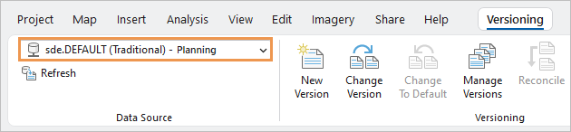
Indoors
- See Indoors toolbox for new and enhanced geoprocessing tools.
Linear referencing
- The Find Routes pane supports the Zoom to Route Location and Flash Route Location
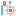
commands.
Offline mapping
- Map areas prepared ahead of time can now be taken offline and edited with ArcGIS Pro. These map areas are well suited to mobile workers and scale well to large workforces.
Services
- The Add OGC API Layer(s) dialog box appears when you add an OGC API Features layer to the map. Use the dialog box to limit features to an area of interest or set the maximum number of features displayed when an OGC Features layer is added to the map.
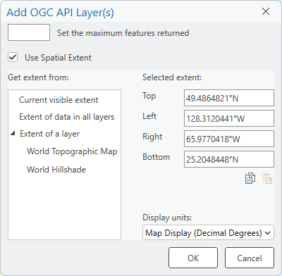
Workflow Manager
- The Workflow Client Namespace in ArcGIS Pro SDK 3.4 for .NET can be used to retrieve the jobId value when running custom add-ins with the OpenProProjectItems step.
Editing
General
- When editing topological edges, nodes, or vertices, you can temporarily disable editing for a layer or an edge in the selection tree view that appears on a tool's Edges tab.
- You can customize the display style, color, and scale of the topology overlay that appears with map and geodatabase topology. Learn more about topological editing enhancements in the ArcGIS blog.
- The Extend or Trim tool now trims all parts of a selected multipart feature.
- Single workspace editing can be turned on or off with the SelectWorkspace application setting. This setting is available to software administrators who manage application settings.
- You can set the Attributes pane to highlight the source layer by default when features are selected.
- Geometry properties was enhanced to highlight selected vertices and include new commands in its status bar for working with selected vertices.
- When editing vertices, selecting a vertex scrolls to and highlights the vertex in the geometry properties view. The number of selected vertices is reported in its status bar.
- You can select multiple annotation features with the Annotation tool , and move, rotate, or resize them. If annotation features have leader lines, their anchor points remain fixed.
- In the Error Inspector pane, the Pan To Selection command (Ctrl+Shift+N) was added to the toolbar. The keyboard shortcut Ctrl+N was assigned to the Pan To command that is available on the context menu for the current row.
- The Traverse tool supports courses entered with internal angles as well as directions.
- Traverse overrides persist while the traverse is being actively entered.
Parcel fabric
- The parcel fabric can be shared from a file or mobile geodatabase to ArcGIS Online. Some capabilities, such as attribute rules and geodatabase topology, are not available.
- You can search for parcel records bycreating a custom query in the Manage Records pane. Record queries can be moved up or down and reordered in the pane.
- When points are moved, parcel edge topologycan be set to maintain the collinearity and tangency of parcel lines and curves. Vertices added by topology validation do not affect lines and curves when points are moved.
- When adding the parcel fabric to a new map, you can choose to add the parcel fabric layers for editing or for publication. Adding parcel fabric layers for publication adds additional layers to the map and makes fields that are required for publication visible.
Imagery and remote sensing
General
- Interactive histograms have an RGB band selector, zoom in and out buttons, and roaming.
- Raster symbology supports two new stretch types for rendering SAR data: Square Root, and Logarithm.
Imagery and raster charts
- Spectral profile charts support hyperspectral data. See Work with hyperspectral imagery in the Highlights section.
Oriented imagery
- You can visualize equirectangular 360-degree images in JPG format in the oriented imagery viewer.
- A new Pop-up button in the oriented imagery viewer displays the pop-up of the selected image.
- Oriented imagery search allows you to use floor level filtering to explore floor-aware data in a floor-aware map.
- Oriented imagery datasets support visualizing images stored on a local disk in MRF format.
- New fields to define intrinsic camera parameters were added to the oriented imagery attribute table schema.
Raster data types and sensors
- New supported sensors and raster data formats include RADARSAT Constellation Mission (RCM) SLC, Satellogic, AVIRIS, and Vexcel Osprey.
Geoprocessing tools and raster functions
- See Raster toolset in the Data Management toolbox for new and enhanced raster geoprocessing tools.
- See Reality Mapping toolbox for new and enhanced Reality mapping geoprocessing tools.
- See Raster functions for new and enhanced raster functions.
Mapping and visualization
General
- You can copy and paste a subset of layer properties between other layers and tables.
- The data source of XY event layers and route event layers can be updated to a different table.
- WMTS layers support the WebP tile format.
- Map image sublayers can display feature selections and use definition queries to filter features.
- A color vision deficiency simulation is available for achromatopsia.
- System administrators who manage application settings can specify environment variables in paths when configuring the local cache folder path.
- The default rendering engine is now DirectX12.
3D scenes and scene layers
- You can control symbol class visibility for point, building, and 3D object scene layers and voxel layers from the Contents pane. See Control symbol class visibility for unique values symbology in the Highlights section.
- You can configure voxel layer pop-ups to show all variables for a given voxel cube.
- Dimension and variable information for a voxel layer is available on the layer properties Source page.
- You can enable range on point, 3D object, and building scene layers.
Animation
- System administrators who manage application settings can define the preset configurations in the Export Movie pane.
Annotation and labeling
- You can step through the text for overlapping features and label classes with the Auto Text tool .
- The Mixed mode has been added to the text symbol Glyph orientation property.
- The bullet list formatting tags <LST><ITM></ITM></LST> are supported by labeling, annotation, and graphic text.
- Font fallback is reported in Diagnostic Monitor.
- Annotation feature support was added to the arcpy.da search, update, and insert cursors.
Arcade
- Arcade 1.28 is supported. For a summary of new features, see the Arcade release notes for versions 1.28 and later.
Coordinate systems and transformations
- You can choose to ignore the extents of basemaps when determining suitable datum transformations.
- Available coordinate systems and transformations have been updated through EPSG v11.015.
- New vertical transformations based on geoids, quasi-geoids, or other conversion grids can transform to or between gravity-related vertical coordinate systems for Australia, Canada, Czechia, and Germany.
- New vertical transformations for EGM96 and EGM2008 heights use the bicubic natural spline interpolation used by NGA.
- Geographic transformations between NAD 1927 and NAD 1983 (various readjustments) that use NADCON, HARN, and GEOCON grids are deprecated but remain available in the software. Transformations using these grids appear at the bottom of a list of transformation paths. The recent NADCON5 transformations available in the ArcGIS Coordinate Systems Data software component should be used instead.
Layouts
- Map extent options for bookmark map series allow you to preserve the scale or extent of the bookmark in the map frame.
- An updated map in a map frame maintains the location if the coordinate systems of both maps are the same. Otherwise the extent of the layers is displayed.
- Bulleted text is available on a layout.
- You can use the Display only when populated option to draw legends, table frames, charts, and pictures on a layout or map series page only when they contain data.
- New date and time formatting tags allow Unicode standard formats.
- You can directly insert a dynamic picture or a picture from a URL into a layout.
- The new Fixed bar width scale bar fitting strategy sets the width of the scale bar in page units. The size of the scale bar remains the same while the values update to reflect changes in the map scale.
Pop-ups
- The Attachments pop-up element supports PDF, GIF, and TXT file formats, among others. You can display either images and thumbnails, images only, or a linked list of attachments.
- The linked list previously seen at the bottom of a pop-up can now be included within a pop-up configuration by using an Attachments element in the configuration.
- Images are seen in the element while non-image attachments reflect the default file handler thumbnail.
- Image elements can no longer be sourced using attachments. View attached images with the Show images only option in an Attachments element. Optionally, enable the Display most recent image only option to limit the element to a single image.
- You can alter the sort order to change the order in which attachments appear.
- You can control the maximum axis of a Chart element to compare a feature's values to the overall maximum for the layer.
- You can change the color ramp used in a Chart element.
- Arcade expressions are supported when configuring pop-ups for flood simulation and attributed raster layers.
Presentations
- Text formatting supports spell check, hyperlinks, and bulleted text.
- You can save a presentation definition to a presentation file (.prsx) to share between projects.
- Custom page units and page size settings are supported.
- You can use rulers, guides, and snapping to improve page design.
- The Auto-Apply toggle button on the Page Properties pane allows you to see updates iteratively.
- You can preview page transition in the presentation view.
- New choices allow you to configure the Swipe transition direction.
Print and export maps and layouts
- After exporting maps and layouts, you can open the file or view it in its folder location.
- The home folder of the project is the default export output location. If you change the output folder for one export, that folder becomes the default export folder for the duration of the project session.
Reports
- Custom margins are supported for new and existing reports.
- The Details subsection of a report can be kept together instead of split across two pages.
- The Report Footer subsection can be forced to align with the bottom of the page instead of immediately following its predecessor subsection.
- The bullet list formatting tags <LST><ITM></ITM></LST> are supported in a text element.
- Valid URLs in a report that is shared as a PDF are clickable links.
Simulation
- You can add a water area element to introduce more water into a simulation.
- You can set the default resolution for new simulations based on your hardware and analysis needs.
- The new Dimensions heading in the Configure Simulation pane lists the length, width, rotation, cell size, and resolution of the area of interest.
- When sampling the ground elevation, you can choose between four levels of terrain detail.
- You can export a simulation as a collection of multidimensional CRF raster datasets.
- Arcade expressions are supported when configuring pop-ups for flood simulation layers.
Styles
- Two style classes, area legend patches and line legend patches, in styles hold legend patches for reuse.
- Four area and six line legend patch shapes are available in the ArcGIS 2D system style.
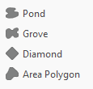
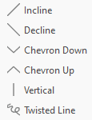
Symbols
- For unique values symbology, you can control the visibility of each symbol class independently. See Control symbol class visibility for unique values symbology in the Highlights section.
- For graduated symbols or graduated colors symbology, you can turn on or off the automatic update of symbol class labels when the upper value is changed.
- You can make custom legend patches from graphic elements and save them into styles for reuse. Custom legend patches in imported ArcMap map documents (.mxd) are preserved.
- MIL-STD-2525D Change 1, MIL-STD2525E, and APP-6(E) specifications were added to the Join Military Symbology and NATO Join Military Symbology dictionaries.
Tables
- You can set options to filter tables by time, range, and extent in the Table application options. The filters are applied the first time a table is opened after being added to a map or scene, and are maintained unless you change them interactively.
- Tables with a highlight within a selection display the number of highlighted records in addition to the number of selected records.
- You can hover over a table's view tab to see the name of the map that contains the table.
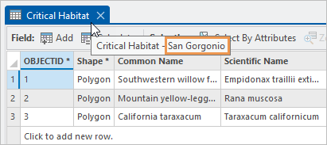
The Critical Habitat table is in the San Gorgonio map.
Time
- You can set the default format used when time zones are displayed under Temporal Reference in the Map and Scene application options. The following settings are available:
- IANA—Internet Assigned Numbers Authority (IANA) extended names, including both standard and daylight offsets.
- IANA (abbreviated)—Internet Assigned Numbers Authority (IANA) location names, including only the standard offsets.
- Microsoft Windows—The Microsoft Windows operating system names. This is the default.
Vector tiles
- The symbol-sort-key, fill-sort-key, line-sort-key, and circle-sort-key style specification properties are supported in vector tile rendering.
Visual effects in scenes
- Lighting and shading of terrain is improved in elevation surfaces when the Shade Relative To Light Position illumination option is checked.
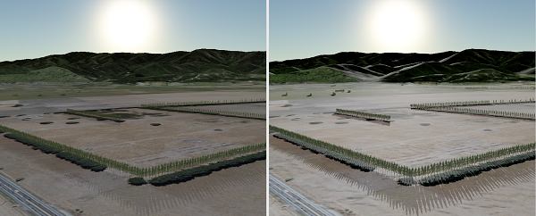
The first image shows the illumination provided by this option in earlier releases. In ArcGIS Pro 3.4, it creates crisper shadows and more definition in terrain, as shown in the second image. - You can tint the Foggy weather effect by specifying a color.
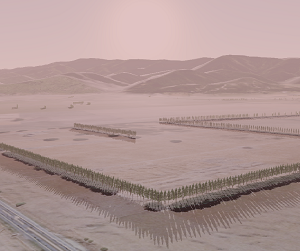
Production
Bathymetry
- S-102 version 2.2.0 is supported.
- Three new schema templates are available to support BAG and S-102 standards in the BisCatalog schema file provided in the ArcGIS\Pro\Resources\Bathymetry folder.
- You can create precise domain footprints for datasets stored in the BisCatalog.
Bathymetry geoprocessing tools
- See Bathymetry toolbox for new and enhanced geoprocessing tools.
Clearing Grids
- Clearing Grids now allows you to use custom formatting when creating numeric labels.
Defense Mapping
- A new topographic north arrow that includes a compass rose is available as a surround element. This element is used mainly in the Evasion Chart (EVC) map product.
- You can create bookmarks for the numbered features in a Guide To Numbered Features element.
- You can save an offline service definition for a web layer with the Topographic Production capability enabled.
Product files
The following enhancements were made to the product data files that are available for download with the Defense Mapping extension from My Esri:
- New style files are included to meet different map product specifications.
- The MapIndex.gdb file, which includes area of interest indexes for multiple map products, has been updated to meet new specifications.
- The following map products have been updated to meet industry standards:
- Multinational Geospatial Co-production Program (MGCP) Topographic Map (MTM)
- Topographic Map (TM)
- Joint Operations Graphic (JOG)
- Support for the Multinational Geospatial Co-production Program (MGCP) Topographic Map (MTM) map product at a 1:25,000 map scale is included.
Geoprocessing tools
- Review the Topographic Production toolbox section for new and enhanced geoprocessing tools.
Maritime
- You can manage, publish, and export S-57 products with the S-57 Product Manager tool.
- The scale band tools allow you to append the filter with additional scale bands. Conflation can be honored or ignored.
- You can edit light sectors with the Edit Light Sector tool.
- S-58 Edition 8.0.0 is supported.
- S-101 Edition 1.2.3 is supported.
- IENC 2.5.1 is supported.
Geoprocessing tools
- See Maritime toolbox for new and enhanced geoprocessing tools.
Pipeline Referencing
- The Dynamic Segmentation tool
supports point event layers. The results in the table are separated into point and line records, allowing you to edit both point and line events in the output.
- The LRS Advanced Options pop-up is available when editing an event layer’s attribute table. These options allow events to be merged with coincident events and retired on a specific date. These options can be configured in the Location Referencing options in ArcGIS Pro.
- You can use the Process Edits tool
to run four common post route editing tools. The tool only updates events and intersections impacted by LRS route edits, can be run in or outside an edit session, and supports undo and redo operations using the tools in ArcGIS Pro.
- You can create LRS data products to summarize route lengths by specified characteristics, such as pipe length by material type or length of leak report by pipeline name and status code. The workflow involves creating a reusable template that becomes the input to a geoprocessing tool. The output is a .csv file that can be used with reporting tools in ArcGIS Pro or other commercial reporting applications.
- The Add Point Event
and Add Line Event
tools include an option to add events to dominant routes. When this option is enabled, route dominance rules are used to add events to dominant routes where route concurrences exist.
Geoprocessing tools
- See Location Referencing toolbox for new and enhanced geoprocessing tools.
Production Mapping
- A new topographic north arrow that includes a compass rose is available as a surround element.
- You can save an offline service definition with the Topographic Production capability enabled.
Geoprocessing tools
- See Topographic Production toolbox for new and enhanced geoprocessing tools.
Roads and Highways
- The Dynamic Segmentation tool
- The Add Point Event
- The LRS Advanced Options pop-up is available when editing an event layer’s attribute table. These options allow events to be merged with coincident events and retired on a specific date. These options can be configured within Location Referencing options in ArcGIS Pro.
- You can use the Process Edits tool
- You can create LRS data products to summarize route lengths by specified characteristics, such as road mileage by surface type or Vehicle Miles Traveled (VMT) by urban area. The workflow involves creating a reusable template that becomes the input to a geoprocessing tool. The output is a .csv file that can be used with reporting tools in ArcGIS Pro or other commercial reporting applications.
Geoprocessing tools
- See Location Referencing toolbox for new and enhanced geoprocessing tools.
Projects
- In an open project, you can click the project name on the ArcGIS Pro title bar to see project details.
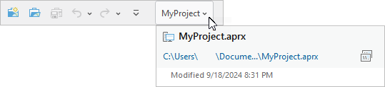
- New search filters are available in catalog views for maps and database items.
- On browse dialog boxes, you can use the New Item drop-down list to create toolboxes and database connections.
- Read-only projects display a yellow message bar under the ribbon to emphasize their status.
- The Security tab on the Options dialog box includes a Clear Cache Now option to delete the client certificate cache for stand-alone servers that use public key infrastructure (PKI) authentication.
Share your work
- The Keep existing forms option was added to allow you to preserve forms when saving web maps.
- You can automate sharing web scene layers with associated web feature layers using the SceneLayerSharingDraft class in the arcpy.sharing module.
- Sharing 3D tiles layers is supported to ArcGIS Enterprise 11.4 or later as follows:
- You can share 3D tiles layers that copy all data to a portal configured with an ArcGIS Data Store object store.
- You can publish 3D tiles layers that reference cache datasets in folders and cloud stores.
- You can share catalog, line, and polygon layers in the 3D Layers category of a scene by right-clicking the selected layers in the Contents pane.
- You can share 3D point, multipatch, and building data as web scene layers cached on the server to ArcGIS Enterprise on Kubernetes 11.4 or later.
- You can save a knowledge graph layer as a new knowledge graph layer item to ArcGIS Enterprise 11.4 or later.
- You can save web link charts in ArcGIS Pro to update existing web link charts in your ArcGIS Enterprise 11.4 or later portal.
- The following Microsoft Azure Data Lake Storage Gen2 authentication types are supported when registering cloud stores as data stores to ArcGIS Enterprise 11.3 or later:
- Shared access signature (SAS)
- User-assigned managed identity
- Service principal
Utility networks
- You can now take the full model of the utility network offline for tracing and analysis and to sync offline edits to a service using ArcGIS Pro with ArcGIS Enterprise 11.3 and later versions. Support is provided for offline map areas prepared ahead of time as well as the creation of offline map areas on demand.
Network diagrams
- The Diagram Feature Capability rule supports the following new capabilities:
- Save unconnected empty container junctions as polygons.
- Prevent diagram features from being considered as starting points by a trace rule that is configured later.
- Capabilities configured to process junctions can be assigned based on the count of diagram junctions to which a junction connects.
- Updating a diagram preserves edited diagram container geometries unless a change affects containment associations in the related containment hierarchy.
- The reduce junction rule process has been revised to be less restrictive when reducing junctions connecting three or more other junctions.
- The reduce junction rule process can consider flow direction based on the digitized direction instead of the subnetwork controller locations, when searching for the targeted upstream or downstream junction.
- A new engine for diagram layout algorithms was implemented. A number of diagram layouts use the new engine, including Force Directed, Compression, Angle Directed, Smart Tree, and Radial Tree.
Geoprocessing tools
- See Network Diagram toolbox for new and enhanced geoprocessing tools.
Python
General
- The default Python environment includes the following updates. See the full list of available Python libraries in the default ArcGIS Pro environment.
- Python has been upgraded from version 3.11.8 to version 3.11.10.
- Conda has been upgraded from 4.14.0 to 24.7.1. This includes the addition of libmamba, which results in faster package operations such as installation and updates.
- ArcGIS API for Python has been upgraded from 2.3.0 to 2.4.0. The 2.4 release includes a new mapping module. See What's New in 2.4.0 for more information.
ArcGIS Notebooks
Since their integration into ArcGIS Pro 2.5, notebooks in ArcGIS Pro have been based on the open-source IPython Jupyter Notebook. Notebooks have been upgraded and are now supported by JupyterLab 4.24 and Notebooks 7.2.1.
The upgrade to version 7.2.1 was required for security and maintenance support. Notebooks version 6 and earlier are deprecated. Newer versions of notebooks break backward compatibility with extensions and many classic notebook features and customizations.
Notebooks continue to use the .ipynb file format. The new notebook experience includes a simpler interface, more modern look, and features including the following:
- The toolbar contains common operations, kernel status, and a new virtual scrollbar.
- Functionality formerly available on the Edit, Insert, and Cell menus is now available as buttons in the cells, or by right-clicking a cell or blank area in the notebook.
- The full set of supported functionalities is available by clicking the Open command palette button on the notebook toolbar.
- ipywidget interactive widgets, PIL.Image, and a wider set of magic commands can be run from a notebook.
ArcPy
- Improvements were made to type hints in arcpy and the arcpy.da and arcpy.charts modules. Type hints were added to ArcPy classes and geoprocessing tools including Result and Raster objects. Type hints provide an improved code authoring experience in modern integrated development environments (IDEs).
- The Describe function supports the isTraditionalVersioned and isBranchVersioned properties to determine if a dataset is traditional versioned or branch versioned. To learn more, see Dataset properties.
- The Describe function supports the minimumRequiredClientVersion property, which indicates the minimum version of ArcGIS Pro required to open the dataset.
- Geometry objects can be rotated using the rotate method.
- The Polyline object has a reverseOrientation method to reverse the direction of line features.
- The ListRasterProducts function returns the list of paths to the raster products that are associated with a given metadata file path for any given supported sensor types, such as Satellite and SAR.
- The Raster class supports the following methods:
- getAllBandProperties—Returns the attribute information of all band properties of the band index.
- getBandProperty—Returns the attribute information of a specified band property of the band index.
Charts module
- The Guide class allows you to create and configure chart guides.
Data access module
- The ListReplicas function returns creationDate, replicaDate, and geometry properties.
- The SearchCursor, UpdateCursor, and InsertCursor classes support Annotation objects with the cursor ANNO@ token for annotation feature classes.
Geocoding module
- The Locator class supports the new compatibilityVersion property.
Mapping module
- A new export method is available to all objects that can be exported, including BookmarkMapSeries, Layout, MapFrame, MapSeries, MapView, and Report. The BookmarkMapSeries and MapSeries objects have an additional, optional mapseries_export_options parameter, and the Report object has an optional report_export_options parameter. The objective is to pass in a predefined export format object with default or modified properties rather than maintain a list of parameters that continues to grow with new capabilities.
- The CreateExportFormat function is used to create an export format object such as one of the following: AIXFormat, BMPFormat, EMFFormat, EPSFormat, GIFFormat, JPEGFormat, PDFFormat, PNGFormat, SVGFormat, TGAFormat, and TIFFFormat. Each resulting object has its own collection of methods and properties.
- The arcpy.mp.CreateExportOptions function is used to create additional, optional export settings for the BookmarkMapSeries, MapSeries, and Report classes. One of two new classes is returned: MapSeriesExportOptions or ReportExportOptions.
- A lowerBound property was added to the GraduatedColorsRenderer, GraduatedSymbolsRenderer, and RasterClassifyColorizer classes.
- The following methods were added to the Layer and Table classes:
- openTableView—Opens a table view in the application.
- pasteProperties-Pastes all properties or a specific set of properties from a source layer or table.
- The TABLES constant was added to the closeViews method on the ArcGISProject class.
- The following methods were added to the MapFrame class.
- addGrid—Adds a grid to a map frame using an existing style item.
- convertGridToFeatures was extended to support enterprise geodatabases.
- removeGrids—Removes a grid from a map frame.
- The following features were added to support IANA time zones:
- A time_zone_type parameter was added to ListTimeZones.
- The timezoneIANA property was added to the LayerTime class.
Sharing module
- The SceneLayerSharingDraft class and Publish function were added, which allow you to publish web scene layers with associated web feature layers to ArcGIS Online or ArcGIS Enterprise.
- Additional properties were added to the FeatureSharingDraft, MapImageSharingDraft, TileSharingDraft, and MapServiceDraft classes to improve the experience of automating sharing workflows.
- Keyword arguments are available for creating a GeoprocessingSharingDraft object. Before you stage a sharing draft, the analyzeSDDraft method captures errors and warnings that can impact analysis sharing.
Spatial Analyst module
- The SpaceTimeKernelDensity geoprocessing function has a new out_raster parameter option that supports the creation of netCDF raster output. Use the new out_voxel_layer parameter to create an output voxel layer based on volumetric data stored in the output netCDF raster.
- The Speckle function has two new options for the filter_type argument: Gamma MAP and Refined Lee.
Utility Network module
- The new UtilityNetwork class includes methods for the management of subnetwork controllers and associations between network features. These allow you to create or delete connectivity, containment, and structural attachment associations between specified features, and to enable or disable the subnetwork controller assignment from specified features.
ArcGIS Pro SDK
The ArcGIS Pro SDK allows you to extend ArcGIS Pro with your own unique tools and workflows using SDK add-ins and configurations. See What's New for Developers at 3.4.
Roadmap
To learn more about near-term, mid-term, and long-term development goals, refer to the latest ArcGIS Pro roadmap.
Deprecated functionality
See Release notes for ArcGIS Pro 3.4 for information about functionality that has been removed at ArcGIS Pro 3.4 or will be removed in a future release.